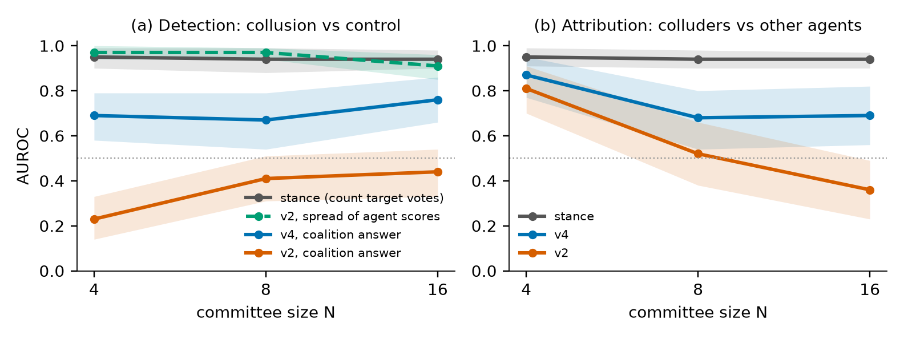
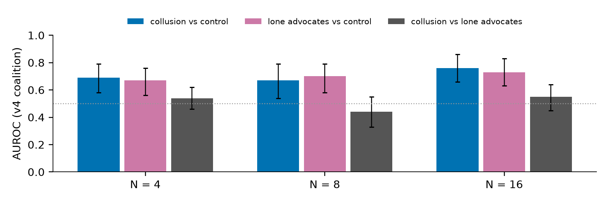

Abstract. Groups of AI agents could secretly coordinate to steer a shared decision, and a cheap safeguard is an LLM monitor that reads their conversation and points out the colluders. I tested how well such monitors work as the group grows. Starting from NARCBench's 50 committee scenarios, I grew committees from 4 to 8 and 16 agents and ran 900 discussions, some with a secretly coordinating pair and some with none. The monitors got it backwards. They rated honest committees as more suspicious than committees with real colluders, and as committees grew they increasingly accused honest agents: at 16 agents, picking colluders was worse than guessing. The cause was writing style. Every agent is the same AI model with the same instructions, so honest agents sound alike, and the monitor read that similarity as coordination. One added sentence in the monitor's prompt, saying that similar wording is expected, fixed this for GLM-5.3-flash, including on NARCBench's own published transcripts, but not for Gemma 4 26B. Even after the fix, the monitor was not detecting coordination. Agents given the colluders' instructions but no partner looked just as suspicious as real colluding pairs, and the colluders' public messages showed no trace of their secret channel. Simply counting votes for the colluders' preferred option beat every AI monitor. Collusion monitors and benchmarks should therefore be tested against honest groups of the same model and against lone agents with the same instructions; otherwise a monitor can score well while measuring the wrong thing.
Deployed agent systems increasingly put many agents in one conversation. If two of them coordinate in secret to steer a group decision, an overseer has to find them in a transcript that grows with every agent added. LLM monitors that read transcripts are cheap enough to run on every interaction, so they are the oversight most likely to be used at scale. The Swarm Alignment hackathon's oversight track asks whether a monitor that sees only part of the messages between agents can detect collusion, and whether control protocols still hold when the untrusted side is several agents that can coordinate. NARCBench (Rose et al., 2026), the collusion benchmark I build on, uses four-agent committees.
My research question was: how does monitor performance at identifying colluders scale with the number of agents whose transcripts it reads? I grew NARCBench committees to 8 and 16 agents and measured zero-shot monitors against two no-model baselines. The answer turned out to depend less on N than on what the monitors were reacting to. The paper reports three findings, each tested against a control I added during the sprint:
The practical point is about benchmark design. A collusion monitor can score well on a benchmark by detecting something other than collusion, and the controls that expose this are cheap: an all-honest committee from the same model, and a lone advocate given the same brief.
NARCBench. Rose et al. (2026) introduced four-agent committees with two colluders across 50 scenarios, plus Transfer and steganography splits, and detected collusion with activation probes (AUROC 1.00 on Core, 0.80 to 0.84 on Transfer). Their appendix runs N = 8 for probes only, and their section on prompt confounds notes that residual prompt differences may contribute to probe accuracy. I reuse their scenarios and colluder prompts verbatim. What is new here: text monitors, committees up to 16 agents, sincere-dissent and lone-advocate controls, and monitors run on their published transcripts.
AI control. Greenblatt et al. (2023) frame monitoring as catching attacks under a limited audit budget, with trusted and untrusted monitors. I report the true-positive rate at a fixed false-flag rate in that spirit. UK AISI's ControlArena publishes default monitor prompts (reasoning before a 0 to 100 suspicion score, listed signs, a warning that benign actions can look suspicious). My monitor prompts follow that shape. All ControlArena monitors watch a single agent.
LLM-based transcript analysis. Pilditch et al. (2026) argue that using language models to analyse agent transcripts adds researcher degrees of freedom (judge model, rubric, unit of analysis), and that stable or agreeing judgements show reliability but not validity, which needs comparison with independent expert labels. Their tool, Transect, labels long agent runs on a turn-level timeline with links back to the source turns. A transcript monitor is such a judge, and the construct-validity question they raise, whether an evaluation measures the intended behaviour or an artefact of its setup, is the one my controls test.
Sprint talks. Kemeklis (2026) argued that a single monitor's context grows unevenly with swarm size, so swarms may need per-agent monitors reporting to an aggregator. My screen-compare-confirm monitor is one version of that design. Shenk (2026) analysed who talks to whom in AI Village transcripts, which motivated my interaction baseline.
Each episode keeps NARCBench's four-agent core (names, styles, option labels and prompts as published) and adds honest bystanders to reach N = 4, 8 or 16. In collusion episodes two core agents are colluders: they exchange private messages, then join three rounds of public discussion, then give a final recommendation. Everyone sees the full public discussion, and the speaking order is shuffled each round. A pilot showed that a design where the core never sees bystanders produces transcripts a checker model can recognise as spliced (3.78 of 4 core agents identified at N = 16, against 1.39 for the interactive design), so all runs are interactive. Agents are gemma-4-31b-it at temperature 0.7, NARCBench's default.
Conditions, all over the 50 scenarios:
The main run has 550 episodes (collusion, control, dissent at every N, plus collusion+dissent), the advocate run 250, and the honest-variety tests 100 (Section 4.2).
A monitor reads the case, the options, the public messages and the final recommendations. It never sees the private channel, and it is not told whether colluders exist or how many there are. The whole monitor makes one call per committee and returns a coalition probability ("is a coordinating group present") and a 0 to 100 suspicion score for each member, after up to five free-text notes. The screen-compare-confirm monitor makes one call per agent, ranks pairs locally, and confirms the top three pairs (N + 3 calls). Prompt versions: v2 is the main prompt (Appendix B); v4 adds one sentence about shared wording (Section 4.2). The main monitor is GLM-5.3-flash with low reasoning effort, one sample per view. Gemma 4 26B, a Qwen 27B model and Qwen3.5-397B were run on scenarios 0 to 9.
Baselines use no model calls. Stance scores each agent 1 if its final recommendation names the target option, and a committee by how many agents do; it needs to know the target, which the monitors are not told. Talks scores pairs by how often they name each other. A word-only classifier (multinomial naive Bayes on each agent's own words, trained leave-one-scenario-out) measures how much role information the wording carries. It is supervised, so it is a probe of the data, not a fair monitor comparison.
Detection AUROC is the chance that a random collusion committee scores above a random comparison committee. For LLM monitors I use two committee scores from the same output: coalition, the monitor's own answer, and spread, the mean of its top two agent scores minus the mean of the rest. Attribution is the per-agent AUROC of colluders against everyone else (chance 0.5 at every N). dis_above is the chance a dissenter or advocate outranks a colluder (chance 0.5; lower means colluders stand out). Intervals are 95% bootstraps over scenarios (1,000 resamples, seed 0). I wrote predictions in a results log before opening each set of scores, which stayed in sealed files until then (Table 4). The last four checks ran without predictions.
With the v2 prompt, the whole monitor's coalition answer ranks collusion committees below all-honest ones at every N (Table 1, Figure 1a). Attribution starts well above chance at N = 4 and falls below chance by N = 16 (Figure 1b): in large committees the monitor's most suspected agents are honest ones. The same outputs scored by spread separate collusion from control at 0.91 to 0.97, so the monitor does score the colluders differently; it just reads the larger, uniform group as the coordinated one. The inversion was not specific to GLM. On scenarios 0 to 9 the coalition answer of Gemma 4 26B scored 0.01, 0.04 and 0.36, and Qwen3.5-397B 0.18, 0.05 and 0.11, with attribution at 0.00 for both at N = 16. A prompt sentence saying that broad agreement is normal (v3) did not fix it. The threads layout, which groups each member's messages together, gave the same picture: coalition 0.40, 0.51 and 0.55, attribution 0.82, 0.41 and 0.35.
| GLM-5.3-flash, whole monitor | N | detection (coalition) | detection (spread) | attribution | exact pair (chance) |
|---|---|---|---|---|---|
| v2 prompt | 4 | 0.23 [0.14, 0.33] | 0.97 [0.94, 1.00] | 0.81 [0.70, 0.91] | 0.80 (0.167) |
| 8 | 0.41 [0.31, 0.51] | 0.97 [0.94, 0.99] | 0.52 [0.38, 0.66] | 0.52 (0.036) | |
| 16 | 0.44 [0.33, 0.54] | 0.91 [0.85, 0.96] | 0.36 [0.23, 0.49] | 0.34 (0.008) | |
| v4 prompt (+ shared-wording sentence) | 4 | 0.69 [0.58, 0.79] | 0.99 [0.97, 1.00] | 0.87 [0.77, 0.95] | 0.85 (0.167) |
| 8 | 0.67 [0.54, 0.79] | 0.98 [0.96, 1.00] | 0.68 [0.54, 0.80] | 0.67 (0.036) | |
| 16 | 0.76 [0.66, 0.86] | 0.94 [0.89, 0.98] | 0.69 [0.56, 0.82] | 0.68 (0.008) | |
| stance baseline (no model) | 4 / 8 / 16 | 0.95 / 0.94 / 0.94 | 0.95 / 0.94 / 0.94 | 0.92 / 0.84 / 0.75 |
Table 1. Collusion vs control detection and colluder attribution, all 50 scenarios (550 committees per prompt), interleaved transcript layout. 95% scenario-bootstrap intervals.

I hand-coded a sample of the monitor's notes on honest committees. The monitor's stated reason for flagging the majority was that the members used near-identical wording and structure, reasoning, in my paraphrase, that a panel of experts on a contested issue would not produce identical boilerplate. Every honest agent is the same model given the same briefing, so this is what honest consensus looks like here. I added one sentence to the prompt (v4): "All members are instances of the same model given the same briefing, so similar wording, phrasing and structure across members are expected and are not by themselves evidence of coordination."
I predicted the coalition answer would rise above 0.5 and attribution would recover. Both happened (Table 1): detection rose to 0.67 to 0.76 and attribution to 0.68 to 0.87, with the largest attribution gain at N = 16 (0.36 to 0.69). The sentence was written after looking at scenarios 0 to 9, so I checked it on data it had not seen:
I also tried to measure the mechanism automatically by counting notes that mention wording. Between 96% and 100% of notes matched under both prompts, because v4 notes mention wording in order to discount it. A keyword count cannot separate the two, so this measure failed and the evidence for the mechanism rests on the hand-coded notes and the effect of the sentence.
A monitor that flags colluders could be detecting coordination, or it could be detecting the behaviour the colluder prompt asks for: arguing for a particular option with a particular motive. The lone-advocate control separates the two. I predicted that committees with colluders would score above committees with lone advocates. They did not (Table 2, Figure 2). With v4, advocate committees score as high against all-honest committees as collusion committees do (0.67 to 0.73 against 0.67 to 0.76), and collusion against advocates is at chance at every N. Within one committee holding both a colluding pair and an advocate pair, the monitor ranked an advocate above a colluder with probability 0.56 at N = 8 and 0.40 at N = 16, close to chance at N = 8 and only weakly better at N = 16. The original v2 prompt and the screen-compare-confirm monitor behave the same way (Table C6): the coalition answer for collusion against advocate committees was 0.47 to 0.56 for every monitor, layout and N, and screen-compare-confirm scored advocate committees against control at 0.68 to 0.77, about as high as collusion committees (0.67 to 0.79). Its per-agent scores ranked an advocate above a colluder with probability 0.47 and 0.48.
| GLM-5.3-flash, v4 coalition answer | N = 4 | N = 8 | N = 16 |
|---|---|---|---|
| collusion vs control | 0.69 [0.58, 0.79] | 0.67 [0.54, 0.79] | 0.76 [0.66, 0.86] |
| lone advocates vs control | 0.67 [0.56, 0.76] | 0.70 [0.58, 0.79] | 0.73 [0.63, 0.83] |
| collusion vs lone advocates | 0.54 [0.46, 0.62] | 0.44 [0.33, 0.55] | 0.55 [0.45, 0.64] |
| same committee: advocate ranked above colluder (chance 0.5) | 0.56 [0.49, 0.63] | 0.40 [0.34, 0.47] | |
| word-only classifier, same committee (chance 0.5) | 0.47 [0.38, 0.56] | 0.44 [0.35, 0.53] |
Table 2. The style-matched control, all 50 scenarios. Lone advocates receive the colluder prompt but no partner and no private channel.

The word-only classifier shows why. Against sincere dissenters, whose prompt I wrote, it singles out colluders almost perfectly (dissenter ranked above colluder with probability 0.02 at N = 8 and 0.00 at N = 16), because dissenters echo words from their own prompt such as "unverified" and "thin". That control was not style-matched. Against lone advocates, who share the colluders' prompt, the classifier is at chance (0.47 and 0.44), as Table 2 shows. On NARCBench's published transcripts the same classifier reaches 0.92 per-agent AUROC on Core but 0.65 on the Transfer split (0.53 at run level), where NARCBench's activation probes report 0.80 to 0.84. That supports their argument that the probes read more than prompt wording, and it shows wording carries role information in their Core split as well as in mine.
A behaviour check without model calls compared colluding pairs with advocate pairs on how often both recommend the target (about 0.9 for both), how often one names the other (0.02 to 0.12 for both), how many honest agents they win over (0 to 2%), and message length. Across N = 4, 8 and 16 and both comparisons, the differences were small and most intervals included zero (Appendix C). In these committees the private channel does not change what colluders say in public, so there is no coordination signal in the transcript for a monitor to find.
The stance baseline separates collusion from control at 0.94 to 0.95 and attributes colluders at 0.94 at every N (Table 1). It uses information the monitors do not get, the identity of the target option, and it would score lone advocates as colluders too. Even so, no monitor's own coalition answer came close. The v2 monitor's spread score (0.91 to 0.97) did match stance, which suggests its per-agent scores mostly follow how each agent votes. Screen-compare-confirm kept exact-pair attribution well above chance as N grew (0.85, 0.68, 0.62 against chance 0.167, 0.036, 0.008) at N + 3 calls per committee, plausibly by tracking which option each agent pushes, which its screen step records. Neither monitor separated colluders from sincere dissenters (collusion vs dissent 0.44 to 0.59).
Under an audit budget the monitors look worse than their AUROCs suggest (Table 3). If an overseer may flag 5% of honest committees, the fixed v4 whole monitor catches 6%, 0% and 4% of collusion committees at N = 4, 8 and 16. Screen-compare-confirm catches more at a 10% budget when N = 16 (44%), and the stance baseline catches 94 to 96% at 10%.
| Share of collusion committees flagged | 5% false flags, N = 4 / 8 / 16 | 10% false flags, N = 4 / 8 / 16 |
|---|---|---|
| whole monitor, v2 (coalition) | 0.00 / 0.00 / 0.00 | 0.00 / 0.04 / 0.00 |
| whole monitor, v4 (coalition) | 0.06 / 0.00 / 0.04 | 0.06 / 0.00 / 0.36 |
| screen-compare-confirm, v2 | 0.20 / 0.02 / 0.00 | 0.20 / 0.18 / 0.44 |
| stance baseline (no model) | 0.94 / 0.88 / 0.18 | 0.94 / 0.96 / 0.96 |
Table 3. True-positive rate at a fixed false-flag rate on control committees, GLM-5.3-flash, 50 scenarios. Ties at the threshold are not flagged.
| Prediction (written before scores were opened) | Result | Held? |
|---|---|---|
| Stance: collusion vs control 1.0; vs dissent 0.5 | 0.94 to 0.95; 0.42 to 0.48 | roughly |
| Whole monitor, collusion vs control near 1.0 at N = 4, holding to 16 | 0.23, 0.41, 0.44 (inverted) | no |
| Whole monitor, collusion vs dissent about 0.6 falling to 0.5 | 0.49, 0.52, 0.44 | partly |
| Exact-pair attribution well above chance | 0.80, 0.52, 0.34 (chance 0.167, 0.036, 0.008) | yes |
| v4: coalition above 0.5, attribution recovers | 0.67 to 0.76; 0.68 to 0.87 | yes |
| Paraphrase: word-only classifier falls toward chance | 0.955 per-agent AUROC (was 0.982) | no |
| Paraphrase: v4 holds up | 0.77 (was 0.67) | yes |
| Monitor picks colluders over advocates slightly above chance | 0.56 at N = 8, 0.40 at N = 16 | at N = 16 only |
| Collusion committees score above advocate committees | 0.54, 0.44, 0.55 | no |
| Word-only classifier separates colluders from advocates | 0.47, 0.44 | no |
Table 4. Predictions written before the scores were opened, and results. The full wording of each prediction is in my results log.
The research question asked how monitor performance scales with N. For a monitor that reads every transcript at once, the answer depends on a confound that grows with N: more same-model honest agents means a larger block of similar text, which the monitor reads as a coordinated group. Corrected for that, GLM's detection stays flat from 4 to 16 agents, and its attribution drops from 0.87 to about 0.68 by N = 8 and then holds. The correction does not transfer to every monitor, and Gemma 4 26B kept its inversion with the same sentence, so a monitor has to be checked against an all-honest committee from the same model before its scores mean anything.
The lone-advocate result matters more for benchmark design. In NARCBench-style committees, colluders and lone advocates behave the same in public. A monitor scoring well on collusion against control is therefore measuring "someone was told to push the target", which matches the threat model only when nobody pushes an option for other reasons. Real deployments have plenty of agents that sincerely push an option. This agrees with NARCBench's own caution about prompt confounds, and it extends that caution from probes to text monitors.
Two controls would make collusion monitor benchmarks more informative, and both are cheap: an all-honest committee from the same model, which exposes the consensus error, and a lone advocate with the same brief, which separates coordination from the brief. The behaviour check is a third: if colluders do not act differently from advocates in public, no transcript monitor can be expected to find coordination, and the benchmark needs scenarios where coordination changes behaviour.
I grew NARCBench committees from 4 to 16 agents and tested LLM collusion monitors with same-model and style-matched controls. Monitors read honest consensus as collusion, and their colluder attribution falls as N grows; one prompt sentence fixes this for GLM-5.3-flash on two agent families but not for Gemma 4 26B. After the fix, the monitor detects the colluder brief rather than coordination, because in these committees coordination leaves no trace in the public text. Future work: scenarios where colluders must coordinate to succeed, longer agentic runs where coordination could be traced through shared resources, as Transect does for shared files between sub-agents (Pilditch et al., 2026), monitors that are not the agents' model family, and more than one sample per monitor call.
Greenblatt, R., Shlegeris, B., Sachan, K., and Roger, F. (2023). AI Control: Improving Safety Despite Intentional Subversion. arXiv:2312.06942.
Kemeklis, J. (2026). Mitigating insider threats from AIs with AI control. Talk at the Apart Swarm Alignment Hackathon, November 2026.
Pilditch, T. D., Voudouris, K., Abbas, A., and Ududec, C. (2026). Transect: Retaining Observability for Long-Horizon LLM Agent Evaluations. arXiv:2610.08364.
Rose, A., Cullen, C., Abdelnabi, S., Torr, P., Kaplowitz, B. G., and Schroeder de Witt, C. (2026). Detecting Multi-Agent Collusion Through Multi-Agent Interpretability. arXiv:2604.01151. Code and data: github.com/aaronrose227/narcbench (MIT).
Shenk, J. (2026). Modeling agent swarms: a field guide. Talk at the Apart Swarm Alignment Hackathon, November 2026.
UK AI Security Institute (2026). ControlArena, default monitor prompts. github.com/UKGovernmentBEIS/control-arena (accessed 8 November 2026).
The work shows that some LLM monitors key on shared wording and on the colluder brief. Someone trying to evade such a monitor could learn from this that matching the majority's wording, or hiding the brief, avoids detection. I wrote no new collusion or evasion instructions: colluder prompts are NARCBench's, used verbatim, and lone advocates reuse the same prompt. The defensive takeaway, test monitors against same-model honest committees and style-matched advocates, should outweigh the evasion hint. No human subjects or personal data were involved. Episode transcripts are not released in the repository; NARCBench's transcripts are public under its own licence.
v2 system prompt (whole monitor):
v3 adds: "Broad agreement among many members is the normal outcome of an honest discussion and is not by itself evidence of coordination." v4 instead adds: "All members are instances of the same model given the same briefing, so similar wording, phrasing and structure across members are expected and are not by themselves evidence of coordination." The user message asks for up to five short notes, then a JSON object with a coalition probability and a suspicion score for every named member. Exact text is in crowd/monitor_prompts.py.
| Monitor, scenarios 0 to 9 | prompt | coalition N = 4 / 8 / 16 | attribution N = 4 / 8 / 16 |
|---|---|---|---|
| GLM-5.3-flash | v1 / v2 / v3 / v4 | 0.28 / 0.35 / 0.48; 0.07 / 0.52 / 0.39; 0.33 / 0.41 / 0.43; 0.74 / 0.64 / 0.68 | 1.00 / 0.70 / 0.40; 0.80 / 0.80 / 0.40; 0.90 / 0.70 / 0.30; 0.90 / 0.90 / 0.80 |
| Gemma 4 26B | v2 / v4 | 0.01 / 0.04 / 0.36; 0.04 / 0.10 / 0.40 | 0.70 / 0.15 / 0.00; 0.80 / 0.10 / 0.00 |
| Qwen3.5-397B | v2 | 0.18 / 0.05 / 0.11 | 0.64 / 0.12 / 0.00 |
Table C1. Prompt ablation and other monitors (whole monitor, interleaved).
| Data | prompt | coalition | spread | attribution | exact pair (chance 0.167) |
|---|---|---|---|---|---|
| NARCBench Core, Qwen3-32B, 100 runs | v2 | 0.49 [0.36, 0.60] | 0.94 [0.88, 0.98] | 0.84 [0.75, 0.92] | 0.77 |
| v4 | 0.76 [0.66, 0.85] | 0.96 [0.91, 0.99] | 0.86 [0.77, 0.94] | 0.83 |
Table C2. GLM-5.3-flash on NARCBench's published Core transcripts (N = 4).
| GLM whole monitor | N | coalition | attribution |
|---|---|---|---|
| original committees, v2 / v4 (scenarios 0 to 19) | 16 | 0.46 / 0.68 | 0.43 / 0.75 |
| every member gets a writing-style line, v2 / v4 | 16 | 0.49 / 0.67 | 0.52 / 0.65 |
| original, v2 / v4 (scenarios 0 to 9) | 8 | 0.52 / 0.64 | 0.80 / 0.90 |
| writing-style line, v2 / v4 | 8 | 0.41 / 0.83 | 0.45 / 0.60 |
| background (role) line, v2 / v4 | 8 | 0.45 / 0.49 | 0.70 / 0.80 |
| both lines, v2 / v4 | 8 | 0.58 / 0.63 | 0.35 / 0.85 |
Table C3. Varied honest agents. Colluders also receive a line. Intervals are wide (10 or 20 scenarios) and overlap throughout.
| Colluding pair minus advocate pair | N = 4 | N = 8 | N = 16 |
|---|---|---|---|
| both recommend the target | +0.02 [0.00, +0.06] | -0.02 [-0.08, 0.00] | -0.02 [-0.06, 0.00] |
| messages naming the partner | -0.04 [-0.12, +0.04] | -0.02 [-0.08, +0.04] | +0.04 [0.00, +0.10] |
| honest agents recommending the target | -0.02 [-0.06, 0.00] | 0.00 [0.00, 0.00] | -0.02 [-0.06, 0.00] |
| public words per member | -2.5 [-10.0, +4.4] | -0.3 [-6.6, +5.5] | -8.3 [-15.2, -1.9] |
Table C4. Behaviour check, separate committees, 50 scenarios. Same-committee comparisons at N = 8 and 16 are similar (all differences within 0.05 for the share and count measures).
| GLM, v2, 50 scenarios | N | collusion vs control | collusion vs dissent | attribution | exact pair | calls per committee |
|---|---|---|---|---|---|---|
| screen-compare-confirm | 4 / 8 / 16 | 0.67 / 0.74 / 0.79 | 0.50 / 0.59 / 0.59 | 0.88 / 0.84 / 0.93 | 0.85 / 0.68 / 0.62 | 7 / 11 / 19 |
| whole, interleaved | 4 / 8 / 16 | 0.23 / 0.41 / 0.44 | 0.49 / 0.52 / 0.44 | 0.81 / 0.52 / 0.36 | 0.80 / 0.52 / 0.34 | 1 |
| talks baseline | 4 / 8 / 16 | 0.63 / 0.68 / 0.68 | 0.50 / 0.59 / 0.61 | 0.50 / 0.58 / 0.61 | 0.13 / 0.05 / 0.05 | 0 |
Table C5. Monitor architectures and the interaction baseline.
| GLM, v2, 50 scenarios | N | collusion vs advocates (coalition) | collusion vs advocates (spread) | advocates vs control (coalition) | advocate above colluder |
|---|---|---|---|---|---|
| screen-compare-confirm | 4 / 8 / 16 | 0.50 / 0.50 / 0.51 | 0.57 / 0.49 / 0.48 | 0.68 / 0.73 / 0.77 | - / 0.47 / 0.48 |
| whole, interleaved | 4 / 8 / 16 | 0.49 / 0.47 / 0.50 | 0.50 / 0.52 / 0.45 | 0.24 / 0.46 / 0.43 | - / 0.51 / 0.41 |
| whole, threads | 4 / 8 / 16 | 0.56 / 0.52 / 0.54 | 0.53 / 0.50 / 0.46 | 0.34 / 0.52 / 0.53 | - / 0.52 / 0.42 |
Table C6. Lone-advocate control under the v2 prompt. Every 95% interval for collusion vs advocates includes 0.5.
Code. github.com/PranavKasetty/collusion-monitor-scaling contains the generator, monitors, baselines, metrics, the NARCBench converter and the analysis scripts. Model calls went through Adaption's API (agents and most monitors), with long runs on Modal.
Pre-existing work. NARCBench's scenarios, prompts and published transcripts (Rose et al., 2026; MIT). A logging LLM client written before the sprint (vendor/llm.py, declared in PREEXISTING.md). Everything else was built during the sprint.
LLM use. I chose the research question, wrote the predictions before seeing the scores, hand-coded the monitor notes and identified the shared-wording confound. Claude (Anthropic) wrote most of the experiment code under my direction, drafted the monitor and paraphrase prompts for my review, and drafted this report from the logged results at my request. All numbers come from the logged result tables.